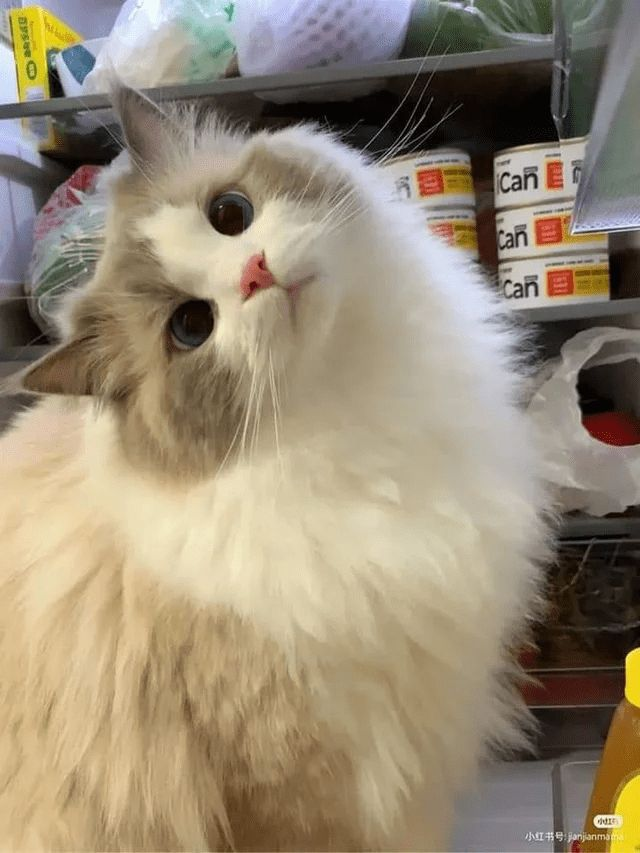
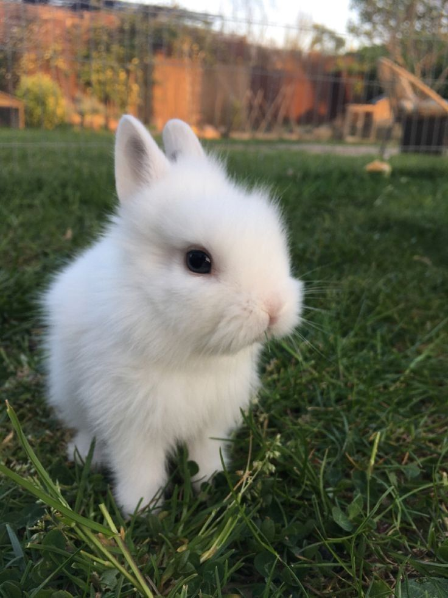
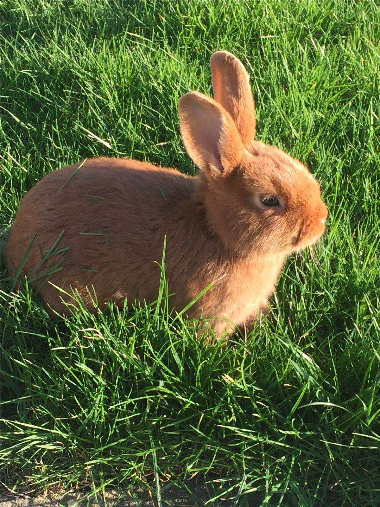
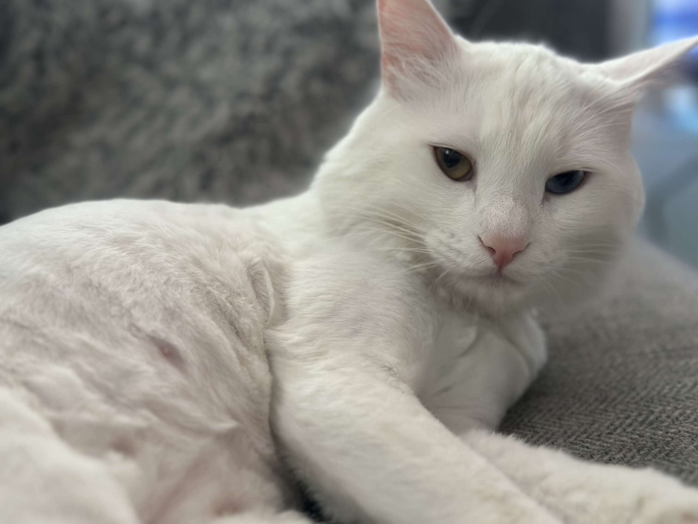

Welcome to Pet Lovers
We are a community of pet enthusiasts who love and care for our furry friends. Join us to share your experiences and find useful tips for taking care of your pets.
Our Lovely Pets
Gentle

Gentle is an endearing and benevolent boy that has a fondness for natural world .
Growing up with a cat as a pet is a delightful experience, filled with moments of playful antics, affectionate purrs, and the joy of a loyal companion. .
TuTu

TuTu is a sweet and fatty cat who loves to much on meats.
Having a cat as a pet during childhood enriches life with warmth and companionship, teaching valuable lessons in responsibility and unconditional love.
CoCo
CoCo is a very helpful and faithful dog.
Caring for a dog teaches valuable lessons in responsibility, empathy, and unconditional love, as their needs and affection foster a nurturing environment.
Lio

Lio is a very understandable and a cute boy, also he was considered the most beautiful cat on social media.
As a cat grows alongside you, their companionship becomes a cherished part of your life story, filled with shared memories and mutual affection.
Swrkew

Swra is a ginger angry cat , which is not too friendly.
The playful antics of a cat, from chasing a laser pointer to pouncing on toys, bring joy and laughter, making even the dullest days brighter.
Luna

Luna is a curious and independent Siamese cat who enjoys lounging in the sun.
Growing up with a cat often means having a silent confidant, always there to listen without judgment, offering a sense of security and understanding.
Molly

Molly is a sick and homeless cat wich is very friendly.
Growing up with a sick cat as a pet teaches profound lessons in compassion, resilience, and the importance of providing unwavering care and love during challenging times.
Max

Max is a friendly and playful Golden Retriever who loves to play fetch.
A dog’s unwavering loyalty and protective instincts provide a deep sense of security and companionship, creating a lifelong bond.
Shera

Shera is a friendly and playful girl Retriever who loves to play with others.
simple act of a cat curling up on your lap can provide immense comfort, creating a cozy atmosphere that is perfect for relaxation.
Lucy

Lucy is a friendly and playful dog with a shiny golden coat , known for her loyalty and love for cuddles.
Growing up with a dog as a pet brings endless joy and energy to daily life, as their playful nature and boundless enthusiasm are infectious.
Daisy

Daisy is a greatful white cat with green eyes , exuding elegance and playfulness.
Caring for a cat teaches important lessons in empathy and patience, as understanding their needs and behaviors requires attentiveness and care.
Bella
Bella is a charming cat with soft grey and white fur creating an elegant appearance. Her expressive eyes and gentle demeanor make her a delightful comanion.
Watching a cat explore its environment can be endlessly fascinating, as their curiosity and agility make every corner of the home a potential adventure.
Fluffy
Fluffy is a cute rabbit with soft white fur, green eyes , and a friendly demeanor.
Growing up with a rabbit as a pet offers a special bond, where their soft fur, quiet companionship, and playful behavior add a unique charm to daily life.
Oreo
Oreo is a charming rabbit with soft brown fur, bright eyes , and a playful personality.
Raising a rabbit as a pet during childhood provides a unique experience filled with gentle affection, the joy of their playful antics, and the soothing presence of a quiet companion.
Snowy
snowy is a charming , fluffy cat with white fur , captivating green and blue eyes , and a friendly personality.
A cat's presence in the household brings a comforting sense of calm, as their independent yet affectionate nature provides both companionship and solitude.